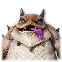

Clon de Aultross
Aultross's Doppelganger
CogniCofre o tienda
Solo cofres
- Solo cofres
- Cofre de mascota misterioso 0,25%
- Cofre de mascota: Cognis 2,4%
- Cofre de mascota de progreso 0,5%
Aion 2 · cuaderno de caza
Las 89 pets que el mapa Elyos no te regala: boss de campo, dungeon, cofre, tienda y Grieta.
0/89 conseguidas · 0/89 al máximo
¿Usás Questlog? Cargá tu colección89 pets
Armada para Elyos: si sos Asmodian, las de Altgard las farmeás en tu mapa y te faltan las de Verteron/Eltnen.
Ningún mob la suelta: sale de cofres de mascota, tienda, pase o evento.
Aultross's Doppelganger
CogniCofre o tienda
Solo cofres

Dratona Tinkerer
CogniCofre o tienda
Solo cofres

Furious Feruk
CogniCofre o tienda
Solo cofres

Mumu Overseer
CogniCofre o tienda
Solo cofres
Glossy Pink Puppy
EspecialCofre o tienda
AtelierAtelier: ya no disponible
Pumpkin Carriage
EspecialCofre o tienda
Shop de HalloweenShop de Halloween: ya no disponible

Black Dragon
EspecialCofre o tienda
Ultimate Founder's Pack
Little Ghost
EspecialCofre o tienda
Shop de HalloweenShop de Halloween: ya no disponible

Wandering Merchant Lugi
EspecialCofre o tienda
Shugo Festival Merchant

Azure Flame Kumiho
EspecialCofre o tienda
AtelierAtelier: ya no disponible
EspecialCofre o tienda
Tsenka Merchant

Aberrant Odyle Spider
FeraCofre o tienda
Solo cofres

Ashen Basilisk
FeraCofre o tienda
Solo cofres

FeraCofre o tienda
Solo cofres
Venomous Insect Sram
FeraCofre o tienda
Solo cofres

Elite Keneire
FeraCofre o tienda
Solo cofres

Ashen Lupyllini
FeraCofre o tienda
Solo cofres
Grave Rat
FeraCofre o tienda
Solo cofres
Young Tog
FeraCofre o tienda
Solo cofres

Mutated Insectoid Valka
FeraCofre o tienda
Solo cofres

NaturaCofre o tienda
Solo cofres

Forest Dionae
NaturaCofre o tienda
Solo cofres
Ancient Spirit
NaturaCofre o tienda
Solo cofres
Ultimate Wind Spirit
NaturaCofre o tienda
Solo cofres
Elite Poisonous Spore Fungen
NaturaCofre o tienda
Solo cofres

Dried Up Forest Guardian
NaturaCofre o tienda
Solo cofres

Drana Contaminant
VarianCofre o tienda
Solo cofres
Swamp Monster
VarianCofre o tienda
Solo cofres
Elite Soulless Corpse Gnat
VarianCofre o tienda
Solo cofres
Gatekeeper Pinopi
VarianCofre o tienda
Solo cofres
La suelta un boss de campo: uno por mapa y con respawn largo.

Pretor Veil Administrator
CogniBoss de campo
Eltnen · nv 80 · 1 spawn
Elite Dratona
CogniBoss de campo
Morheim · nv 80 · 1 spawn

Elite Klaw
CogniBoss de campo
Verteron · nv 45 · 1 spawn
Elite Karnif
FeraBoss de campo
Morheim · nv 80 · 1 spawn

Elite Guardite
VarianBoss de campo
Verteron · nv 45 · 1 spawn
Solo la suelta un boss de dungeon.

Phantasmal Lakshmi
CogniBoss de dungeon
Draupnir · boss
Predator Saraswati
CogniBoss de dungeon
Draupnir · boss
Red Spark Ignus
NaturaBoss de dungeon
Templo de Fuego · boss
Black Smoke Murute
NaturaBoss de dungeon
Templo de Fuego · boss
VarianBoss de dungeon
Cueva de Krao · boss
La sueltan mobs adentro de una dungeon, no en el mapa abierto.

Sentinel K'nash
CogniDungeon
Cuna de la Nada · élite

Urugugu Brawler
CogniDungeon
Cañón de Urugugu · élite
Flame Barghest
FeraDungeon
Templo de Fuego · élite

FeraDungeon
Isla del Aliento Azul · élite

Elite Ursus
FeraDungeon
Isla del Aliento Azul · élite
Ultimate Water Spirit
NaturaDungeon
Arkanis Fragmentado · élite
Ultimate Fire Spirit
NaturaDungeon
Templo de Fuego · élite
Ultimate Earth Spirit
NaturaDungeon
Isla Aérea de Vakron · élite

Flame Stone Guardian Statue
VarianDungeon
Templo de Fuego · élite

Krao Mutant
VarianDungeon
Cueva de Krao · élite

Krao Seal Guardian
VarianDungeon
Cueva de Krao · élite

Krao Test Subject
VarianDungeon
Cueva de Krao · élite
Mob de Altgard (entrás por la Grieta) o de dungeon: elegí la ruta.

Addicted Shulak Cart Worker
CogniGrieta o dungeon
Altgard · nv 36 · 29 spawns

Odyle Stone Spirit
NaturaGrieta o dungeon
Altgard · nv 46 · 10 spawns

Congealed Drana
VarianGrieta o dungeon
Altgard · nv 12 · 26 spawns

Duduka Trebuchet Worker
VarianGrieta o dungeon
Altgard · nv 42 · 44 spawns

Duduka Worker
VarianGrieta o dungeon
Altgard · nv 41 · 75 spawns
Cadaver Cleaner
VarianGrieta o dungeon
Altgard · nv 34 · 61 spawns

VarianGrieta o dungeon
Altgard · nv 44 · 26 spawns
Poison Blood
VarianGrieta o dungeon
Altgard · nv 29 · 28 spawns

VarianGrieta o dungeon
Altgard · nv 29 · 10 spawns
Parasite Swarm
VarianGrieta o dungeon
Altgard · nv 36 · 11 spawns
Solo en Altgard, territorio Asmodian: hace falta la Grieta.

Biruta Herbalist
CogniGrieta
Altgard · nv 17 · 4 spawns

Mumu Warrior
CogniGrieta
Altgard · nv 41 · 70 spawns

Mumu Worker
CogniGrieta
Altgard · nv 32 · 83 spawns
Withered Branch Spider
FeraGrieta
Altgard · nv 11-40 · 306 spawns

FeraGrieta
Altgard · nv 10 · 132 spawns
FeraGrieta
Altgard · nv 21 · 16 spawns
Cadaver Insectoid
FeraGrieta
Altgard · nv 12 · 16 spawns

Tamed Karnif
FeraGrieta
Altgard · nv 37 · 56 spawns
FeraGrieta
Altgard · nv 41 · 65 spawns
FeraGrieta
Altgard · nv 18 · 10 spawns
Mutated Ursus
FeraGrieta
Altgard · nv 21 · 18 spawns

Ashen Agrint
NaturaGrieta
Altgard · nv 48 · 8 spawns

Ashen Dionae
NaturaGrieta
Altgard · nv 21 · 14 spawns

Mutated Forest Guardian
NaturaGrieta
Altgard · nv 48 · 25 spawns

Faded Predator
VarianGrieta
Altgard · nv 35 · 15 spawns

Faded Drana
VarianGrieta
Altgard · nv 35 · 13 spawns
Faded Floater
VarianGrieta
Altgard · nv 35 · 20 spawns
Drakana Kalgolem
VarianGrieta
Altgard · nv 11 · 13 spawns
Soulless Corpse Gnat
VarianGrieta
Altgard · nv 33 · 22 spawns

Drana Mutant
VarianGrieta
Altgard · nv 10 · 50 spawns

Distorted Mutant
VarianGrieta
Altgard · nv 30 · 20 spawns
Vigilant Oculazen
VarianGrieta
Altgard · nv 32 · 19 spawns
Drana Slime
VarianGrieta
Altgard · nv 11 · 21 spawns
Nada con esos filtros.
Tu colección
Se guarda en este navegador. Cargala desde la app de Questlog o pasala de un dispositivo a otro con un link.
¿Usás la app de escritorio de Questlog? Cargá tu colección y niveles de un clic.
%APPDATA%\Questlog\aion-2\characters.jsonSe lee en tu navegador, no se sube nada. La colección es de cuenta: cualquier personaje sirve.
characters.json acáUn link con tus pets y sus niveles. Abrilo en el celu o en la PC y elegí si sumarla o reemplazar la de ahí.
Plan de Grieta
Dónde están las pets de Altgard que te faltan, por banda de nivel. Tocá una fila y el mapa te marca a dónde ir.
Zona Asmodian: entrás por la Grieta. Nivel 45+, abre cada 3 h, 60 min adentro.
Guía de genus
Elegí por genus y por facha. Lo que cambia entre genus es el bonus de equipar y qué pueden tirar los slots: está acá una sola vez, porque es idéntico dentro de cada genus.
21 en la lista · bonus de equipar
| Nv 1 | Velocidad de montura en tierra +1 |
|---|---|
| Nv 2 | Precisión +1 · Velocidad de montura en tierra +2 |
| Nv 3 | Precisión +2 · DEX +1 · Velocidad de montura en tierra +3 |
15 en la lista · bonus de equipar
| Nv 1 | HP máx. +10 |
|---|---|
| Nv 2 | Crítico +1 · HP máx. +20 |
| Nv 3 | Crítico +2 · HP máx. +30 · STR +1 |
15 en la lista · bonus de equipar
| Nv 1 | SP máx. +300 |
|---|---|
| Nv 2 | Resistencia a crítico +1 · SP máx. +600 |
| Nv 3 | AGI +1 · Resistencia a crítico +2 · SP máx. +900 |
27 en la lista · bonus de equipar
| Nv 1 | Costo de sprint de montura +10 |
|---|---|
| Nv 2 | Evasión +1 · Costo de sprint de montura +20 |
| Nv 3 | CON +1 · Evasión +2 · Costo de sprint de montura +30 |
Costo de sprint: valor tal cual en los datos de questlog, que no aclaran si lo sube o lo baja.
11 en la lista · bonus de equipar
Sin bonus de equipar en los datos de questlog.
Tocá una casilla para ver qué puede tirar ese slot, cuánto cuesta bloquearlo y su nivel de desbloqueo.